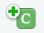

Dasar-Dasar Pemanfaatan Quarto R

Data Analysis Workflow
Workflow umum pada analisis data secara umum dimulai dari import data, merapikan data, transformasi data, visualisasi data, pemodelan, hingga diakhiri dengan komunikasi hasil analisis data.

Sumber: https://r4ds.hadley.nz/
Manual updates ❌

Updates with Quarto ✅

Publishing system that supports multiple languages & outputs
Open source tools for scientific and technical publishing. Pengembangan Quarto disponsori oleh Posit, di mana sebelumnya terdapat hal serupa yaitu R Markdown, yang memiliki tujuan yang sama, tetapi ditargetkan khusus bahasa R.

Artwork from “Hello, Quarto” keynote by Julia Lowndes and Mine Çetinkaya-Rundel, presented at RStudio::Conf(2022). Illustrated by Allison Horst.
R Markdown vs Quarto

R Markdown
Sistem penerbitan untuk ekosistem R
Bergantung pada R

Quarto
Command Line Interface (CLI)
Memperluas ekosistem R Markdown
Multi-bahasa dan multi-mesin
R Markdown akan tetap dipertahankan tetapi kemungkinan tidak ada fitur baru (Xie 2022).
3. Code chunks (or cells or blocks)
Tiga cara untuk menyisipkan code chunk:
Pintasan keyboard
Cmd/Ctrl+Option/Alt+I. Tombol Insert Chunk di toolbar editor.
Ketik manual pembatas chunk
```{r}dan```.
Dua cara untuk menjalankan code chunk:
- Gunakan tombol Run Current Chunk atau Run All Chunks Above.

- Jalankan code chunk saat ini dengan
Cmd/Ctrl+Shift+Enter.
Three ways to render
RStudio/Quarto integration:
 Render button in RStudio or
Render button in RStudio or Cmd/Ctrl+Shift+Kkeyboard shortcut✨ Quarto R package ✨
Quarto CLI